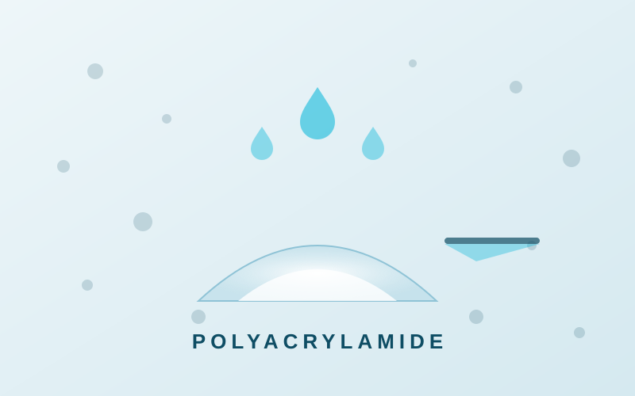
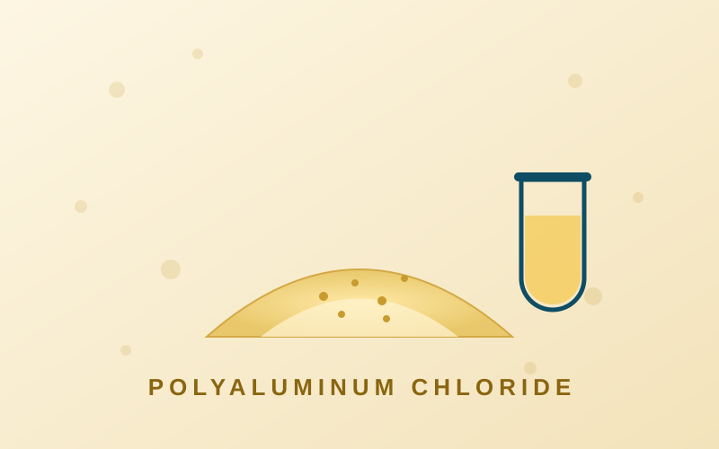
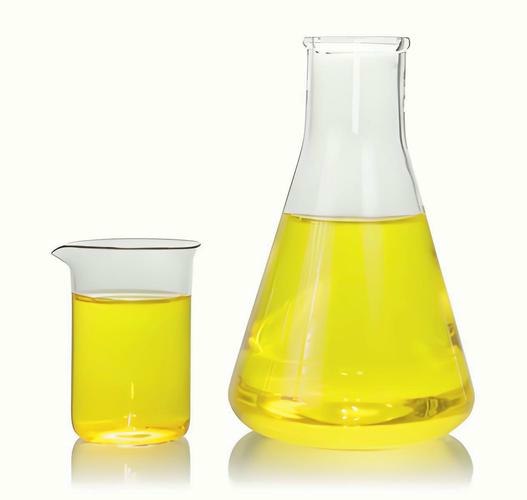
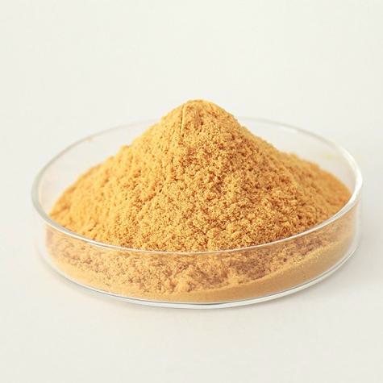
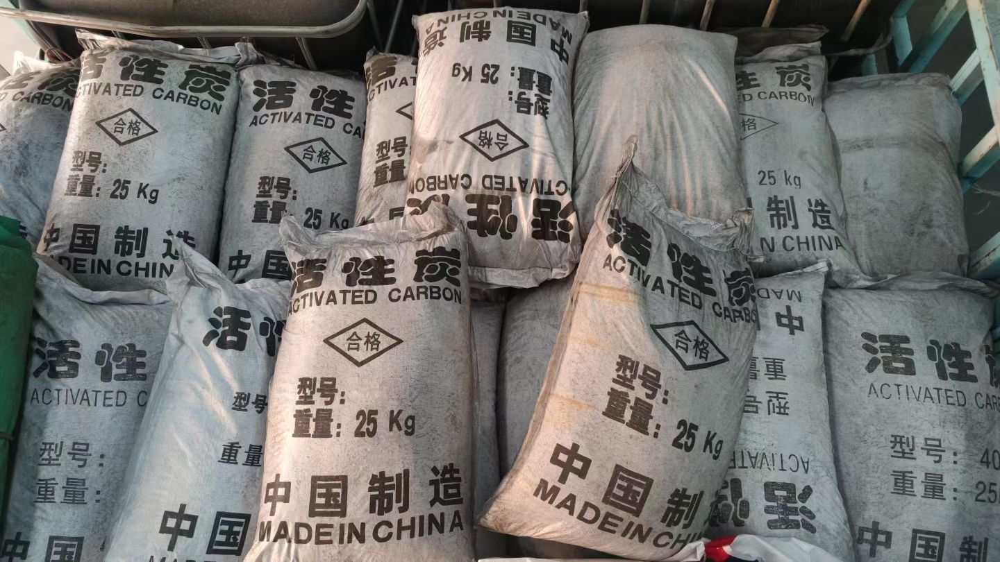
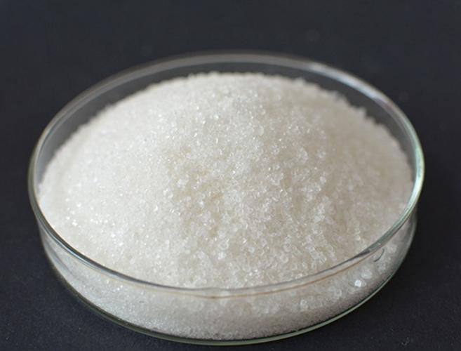
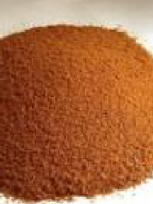
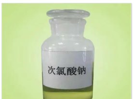

The right chemical starts with your application.
PAC, PAM and supporting water-treatment materials, sourced through suppliers in Gongyi, Jiaozuo and nearby areas. Taixinchang coordinates grade selection, supplier communication and export requirements for your inquiry.
- Based in Gongyi, Henan
- Multi-supplier sourcing
- Specifications confirmed by grade
Water Treatment Chemicals & Related Materials
We coordinate sourcing across core coagulants, flocculants and supporting water-treatment materials. Exact grade, parameters, packaging and availability are confirmed for each inquiry.

Anionic PAM (APAM)
Anionic flocculant for wastewater treatment, mineral processing, metallurgy, papermaking and related industrial processes.
Cationic PAM (CPAM)
Cationic flocculant used in sludge dewatering, flotation and selected papermaking water-treatment processes.
Nonionic PAM (NPAM)
Nonionic flocculant for selected wastewater, coal-washing and industrial applications.

PAC Solid (Powder)
Solid polyaluminium chloride for drinking-water treatment and industrial wastewater applications, subject to grade selection.

PAC Liquid
Liquid polyaluminium chloride for water-treatment systems using liquid chemical dosing.

PFS (Polyferric Sulfate)
Iron-based coagulant available in liquid and solid forms for water and wastewater treatment.

Coal-based Activated Carbon
Crushed, briquetted and powdered coal-carbon grades for water treatment and process adsorption.

Sodium Acetate
Explore sodium acetate trihydrate for biological denitrification. Compare grades on the same assay basis.

PAFC
Aluminum- and iron-based composite coagulant for selected water and industrial wastewater treatment applications.

Sodium Hypochlorite
Liquid disinfectant for water-treatment applications. Concentration and product requirements are confirmed for the selected grade.
Images are appearance or packaging references. Actual appearance and packaging vary by product grade and confirmed order.
* PAM molecular-weight ranges combine supplier literature across grades. They do not describe one grade or guarantee availability across the entire range.
Indicative Product Parameters
These are broad reference ranges drawn from supplier product literature. They are not a single specification for every supplier, grade or batch.
| Product | Indicative parameters | Selection note |
|---|---|---|
| PAC Solid | Al₂O₃: 20–30%; basicity: approx. 40–90%; pH: approx. 3.5–5.0 | Other limits vary by grade and production process. |
| PAC Liquid | Al₂O₃: approx. 10%+; basicity: approx. 40–90%; pH: approx. 3.5–5.0 | Liquid PAC parameters are separate from solid PAC. |
| APAM | Approx. 3–32 million* | Combined approximate range from supplier product literature; exact grade and availability are confirmed with the selected supplier. |
| CPAM | Approx. 4–32 million* | Combined approximate range from supplier product literature; ionicity and exact grade are confirmed with the selected supplier. |
| NPAM | Molecular weight: approx. 4–16 million* | Combined approximate range from supplier product literature; exact grade is confirmed with the selected supplier. |
| PFS | Total iron: approx. 11% liquid / 19% solid; basicity: approx. 8–16%; pH: approx. 2–3. | Liquid and solid grades have different limits. |
| PAFC | Al₂O₃: approx. 10% liquid / 27–29% solid; Fe₂O₃: approx. 1–4% liquid / 3–6% solid; basicity: approx. 60–95%. | Liquid and solid grades have different limits. |
| Coal-based Activated Carbon | Crushed, briquetted and powdered types; separate water purification and high molasses number briquetted series. | Select a type and confirm the complete grade specification. |
| Sodium Acetate Trihydrate | Assay as trihydrate: grade minima 98.0–99.5%; pH (5% solution): 7.5–9.0; water-insoluble matter: ≤0.002%. | Confirm the selected minimum and assay basis. |
| Sodium Hypochlorite | Available chlorine: approx. 5–13%, depending on grade. | This range comes from the supplier's dedicated sodium hypochlorite specification; the selected grade and batch limits are confirmed on inquiry. |
*PAM molecular-weight ranges are approximate envelopes converted from the suppliers' '10,000' units. They summarize the combined ranges in supplier product literature; an individual supplier or grade may cover only part of the overall range. The exact molecular weight, charge/hydrolysis parameters and availability are confirmed for the selected supplier grade. Final product type, technical limits, packaging, documentation and price are confirmed after reviewing the customer's application, destination requirements and selected supplier.
Industries We Serve
Our chemicals are used across a wide range of industries for water purification, wastewater treatment, and process optimization.
Drinking Water Treatment
Municipal water supply plants, drinking water purification, and potable water treatment facilities.
Municipal Wastewater
Urban sewage treatment plants, MBR systems, sludge dewatering, and biological treatment.
Industrial Wastewater
Textile, dyeing, printing, leather, food & beverage, pharmaceutical, and chemical manufacturing.
Mining & Mineral Processing
Coal washing, mineral flotation, tailings treatment, and process water recycling in mining operations.
Oil & Gas
Drilling fluids, enhanced oil recovery, produced water treatment, and fracturing fluid additives.
Paper & Pulp
Retention aids, drainage improvement, dry strength enhancement, and white water treatment in paper mills.
Textile & Dyeing
Color removal, COD reduction, sludge dewatering, and water recycling in textile and dyeing mills.
Agriculture & Aquaculture
Aquaculture water treatment, irrigation water purification, soil conditioning, and agricultural runoff treatment.
Packaging and Shipment Coordination
We coordinate packaging, labeling, warehousing arrangements, loading, shipment schedules and export logistics according to the selected product, supplier, order quantity and destination. Our current market focus is Southeast Asia. We welcome inquiries from other regions and review shipping feasibility for each product and destination. Specific arrangements are confirmed in the individual quotation; supplier facilities and warehouses are not represented as Taixinchang-owned assets.
Product Documents Confirmed by Grade and Order
Document availability depends on the selected supplier, product grade, batch and destination requirements. We confirm the applicable documents before order commitment.
Technical Data
Supplier TDS or product specification where available for the selected grade.
Safety Information
SDS/MSDS availability is checked against the selected product and supplier.
Batch Quality Record
Batch COA is requested and confirmed with the supplier for the actual order.
Export Documents
Shipping and origin documents are confirmed according to the order and destination market.
Supplier Coordination for Water Treatment Chemicals
We work as a trading and sourcing partner, coordinating multiple suppliers rather than presenting partner factories as our own facilities.
Multi-supplier Sourcing
We coordinate product options from manufacturers in Gongyi, Jiaozuo and nearby areas.
Application-based Matching
Product selection starts with the customer's water conditions, process, target parameters and destination requirements.
Specification Coordination
Supplier specifications are kept separate and checked against the selected product grade.
Document Verification
Technical, safety and batch documents are confirmed with the supplier before they are represented as available.
Warehousing Coordination
Storage and consolidation arrangements are coordinated with the selected supplier or logistics partner when required.
Export Logistics Coordination
Packaging, loading, freight and export documents are coordinated for the confirmed order.
Clear Communication
We clarify technical and commercial requirements before confirming a product recommendation or quotation.
Henan Taixinchang Trading Co., Ltd.
Henan Taixinchang Trading Co., Ltd. is a water-treatment chemicals trading and sourcing company based in Gongyi, Henan, China. We coordinate product sourcing across multiple suppliers in Gongyi, Jiaozuo and nearby areas, helping overseas buyers match product form, grade and specifications to their application and destination requirements.
Our product range includes PAC, APAM, CPAM and NPAM, PFS, PAFC, coal-based activated carbon, sodium acetate and sodium hypochlorite. Our service covers multi-supplier sourcing, product specification matching, supplier quality-document coordination, packaging and warehousing coordination, and export logistics. Product availability, supporting documents and commercial terms are checked for each inquiry and confirmed before order commitment.
- Trading and sourcing partner — not a chemical manufacturer
- Supplier network across Gongyi, Jiaozuo and nearby production areas
- Product selection based on application and destination requirements
- Current focus: Southeast Asia; inquiries from other regions are welcome
Coordinating product supply for overseas buyers
Product sourcing, specification matching, supplier document coordination, packaging, warehousing arrangements and export logistics.
Supplier-side facilities and inventory are coordinated as required and are not represented as Taixinchang-owned assets.
Frequently Asked Questions
Common questions about selecting water-treatment chemicals for overseas projects.
How do you select a suitable PAC grade?
What is the difference between PAC powder and PAC liquid?
How do I choose APAM, CPAM or NPAM?
Can you source products beyond PAC and PAM?
What information should I include in an inquiry?
A clearer starting point for product selection.
Practical reading to help you describe your process and requirements.
PAC or PAM? Start with the process.
Understand the roles of coagulants and flocculants before selecting a grade.
Read the guide 02 / SELECTION GUIDEEstimate PAC consumption.
Turn a validated dose and daily flow into an indicative purchasing quantity.
Read the guide 03 / SELECTION GUIDECompare carbon-source requirements.
Review product form, assay basis and practical cost factors.
Read the guideTell Us What Your Process Needs
Tell us your water-treatment needs, target product and destination. We will review the requirements and confirm the suitable product options and quotation details.
Contact Information
Address
Gongyi City, Henan Province, China
Business Hours
Mon - Sat: 8:30 - 18:00 (GMT+8)